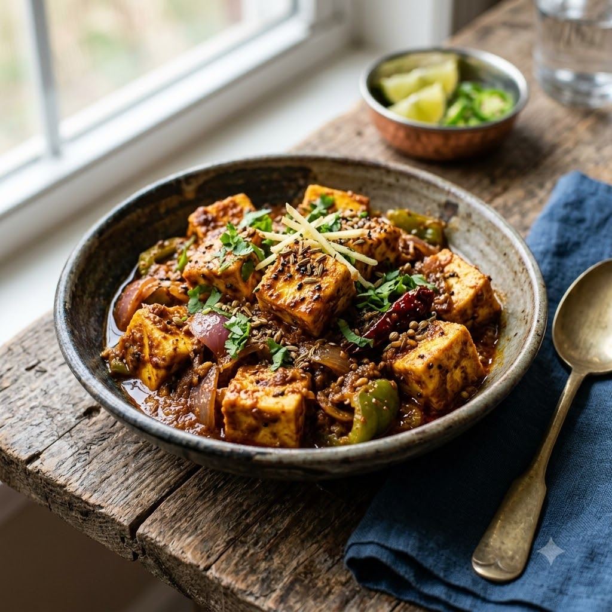

Paneer Do Pyaza

Paneer Do Pyaza
Chef Magic – Sauté Auto 24 min — Serves 4
Gluten-Free • Vegetarian • High-Protein • Everyday
🧑🍳 Chef Magic🍽 Serves 4
Ingredients
- 250g paneer, cubed
- 3 onions — 2 cubed into petals, 1 finely chopped
- 2 tomatoes, pureed
- 1 tbsp ginger-garlic paste (adrak-lehsun paste)
- 1 tsp cumin seeds (jeera)
- 1 tsp coriander powder (dhania powder)
- 1/2 tsp turmeric (haldi)
- 1 tsp red chilli powder (lal mirch powder)
- 1/2 tsp garam masala
- 2 tbsp oil
- Salt to taste
- Chopped coriander (dhania) to garnish
Method
1Add oil and cumin seeds to the jar; select Sauté (Speed 2–4, ~130–160°C) until fragrant.
2Add the finely chopped onion and cook for 6 minutes until golden.
3Add ginger-garlic paste, tomato puree, turmeric, chilli powder and coriander powder; sauté for 7 minutes until the oil separates.
4Add the onion petals and a splash of water; simmer on Sauté (Speed 1–2, ~100–110°C) for 5 minutes until the petals soften but still hold their shape.
5Gently fold in the paneer cubes, garam masala and salt; sauté for 3 minutes just to warm through. Garnish with coriander.
Tip: Keep the onion petals separated rather than fully mixed in — Do Pyaza means ‘double onion’ and the petals should stay